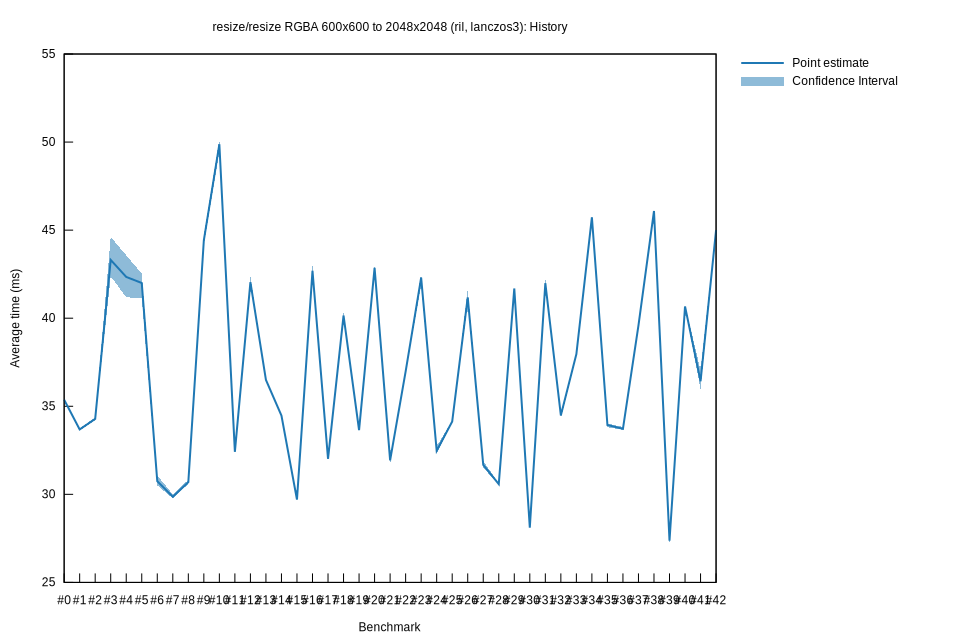

# 72022-11-25T16:54:21Z
|
Lower Bound |
Estimate |
Upper Bound |
| Value: |
29.77ms |
29.86ms |
30.00ms |
| Change in Value: |
-3.2707% |
-2.4875% |
-1.6704% |
No change in performance detected.
# 62022-11-04T21:03:02Z
|
Lower Bound |
Estimate |
Upper Bound |
| Value: |
30.50ms |
30.75ms |
31.07ms |
| Change in Value: |
-27.328% |
-25.888% |
-24.320% |
No change in performance detected.
# 52022-09-02T22:53:07Z
|
Lower Bound |
Estimate |
Upper Bound |
| Value: |
41.13ms |
42.00ms |
42.54ms |
| Change in Value: |
-4.5122% |
-1.8418% |
+0.9019% |
Change within noise threshold.
# 42022-08-16T23:03:44Z
|
Lower Bound |
Estimate |
Upper Bound |
| Value: |
41.19ms |
42.34ms |
43.57ms |
| Change in Value: |
-4.9232% |
-1.8799% |
+1.2262% |
Change within noise threshold.
# 32022-08-16T22:37:40Z
|
Lower Bound |
Estimate |
Upper Bound |
| Value: |
42.38ms |
43.31ms |
44.62ms |
| Change in Value: |
+22.493% |
+25.165% |
+28.651% |
No change in performance detected.
# 22022-08-16T01:55:00Z
|
Lower Bound |
Estimate |
Upper Bound |
| Value: |
34.21ms |
34.28ms |
34.37ms |
| Change in Value: |
+1.5793% |
+2.0356% |
+2.4805% |
No change in performance detected.
# 12022-08-16T01:15:45Z
|
Lower Bound |
Estimate |
Upper Bound |
| Value: |
33.61ms |
33.69ms |
33.73ms |
| Change in Value: |
-5.1446% |
-4.8045% |
-4.4949% |
No change in performance detected.
# 02022-08-16T00:56:05Z
|
Lower Bound |
Estimate |
Upper Bound |
| Value: |
35.30ms |
35.37ms |
35.44ms |